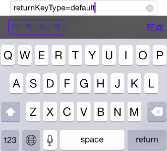
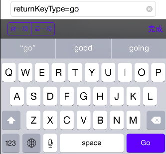
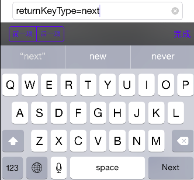
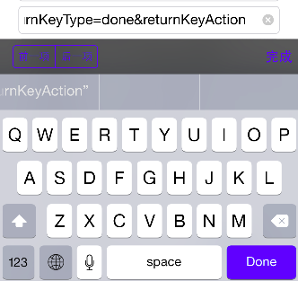
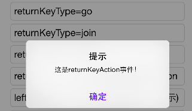

- Introduction
- 1. EMP5.3技术白皮书
- 2. EMP 安全
-
3.
EMP界面开发规范
- 3.1. 变更记录
- 3.2. CSS样式
- 3.3. 属性
-
3.4.
界面标签
- 3.4.1. 控件支持属性和样式对照表
-
3.4.2.
基础标签
- 3.4.2.1. A
- 3.4.2.2. B & Strong
- 3.4.2.3. Body
- 3.4.2.4. Br
- 3.4.2.5. Div
- 3.4.2.6. Form
- 3.4.2.7. I & Em
- 3.4.2.8. Img
- 3.4.2.9. InputButton
- 3.4.2.10. InputCheckbox
- 3.4.2.11. InputHidden
- 3.4.2.12. InputPassword
- 3.4.2.13. InputRadio
- 3.4.2.14. InputSegment
- 3.4.2.15. InputSwitch
- 3.4.2.16. InputText
- 3.4.2.17. Label
- 3.4.2.18. Richtext
- 3.4.2.19. Select & Option
- 3.4.2.20. Table & Tr & Td & Th
- 3.4.2.21. Webview
- 3.4.3. SDK定制说明
- 3.4.4. 定制标签
- 3.5. 布局与刷新
-
3.6.
Lua
-
3.6.1.
基础Lua库
- 3.6.1.1. accelerometer
- 3.6.1.2. audio
- 3.6.1.3. corp
- 3.6.1.4. database
- 3.6.1.5. document
- 3.6.1.6. file
- 3.6.1.7. gesture
- 3.6.1.8. gps
- 3.6.1.9. history
- 3.6.1.10. http
- 3.6.1.11. json
- 3.6.1.12. kv
- 3.6.1.13. location
- 3.6.1.14. offline
- 3.6.1.15. qrcode
- 3.6.1.16. screen
- 3.6.1.17. system
- 3.6.1.18. timer
- 3.6.1.19. utility
- 3.6.1.20. video
- 3.6.1.21. window
- 3.6.2. 界面标签支持的Lua接口
- 3.6.3. 动画
- 3.6.4. RYTL脚本库
-
3.6.1.
基础Lua库
- 3.7. javascript
- 4. EMP开发配置
- 5. Migrate
- 6. EWP5.3管理后台功能说明文档
- 7. EWP API
- 8. EWP Manual
- Published using GitBook
Input:text
1 功能说明
Input:text 为文本域控件, 供用户输入文本使用, 是由input标签加type="text"属性实现的。
例: <input type="text"/>
2 属性
value
指定初始显示在文本域中的文字内容.
@value string 任意的字符串.
hold
显示在文本域中的输入提示文字.
@value string 任意的字符串.
enable
指定文本域是否可用, 即是否响应用户事件.
@value string true/false 默认为true.
border
表示是否有边框, 1表示有边框, 0表示无边框，默认值为1.
style
指定输入框的输入类型, 多种类型组合时以";"分隔。具体定义如下:
-wap-input-format:'N'表示只能输入整数, 如 123, -123;-wap-input-format:'n'表示只能输入实数, 如 123, -123, 12.50, -0.15;-wap-input-format:'phone'表示要求输入的是电话号码;-wap-input-format:'date'表示要求输入的是日期.
日期控件又有如下附加属性:
- showformat
指定显示在界面中的日期格式.
@value string 日期格式匹配字符串 注: 5.2版本及之前版本支持showFormat,5.3版本更正为showFormat. 同时为了兼容也支持showFormat. 我们建议使用showformat. - valueformat
指定回传服务器的Value值日期格式.
@value string 日期格式匹配字符串 注: 5.2版本及之前版本支持valueFormat,5.3版本更正为valueformat. 同时为了兼容也支持valueFormat. 我们建议使用valueformat.
以上格式匹配字符串遵循Unicode Technical Standard #35标准, 请参考Date Field Symbol Table. 目前客户端支持year, month, day, week, weekday五个字段, 请根据需要和标准设置相应的格式匹配字符串. 下面列出了常用的匹配字符串及其含义供参考：
| 匹配字符串 | 含义 | 备注 |
|---|---|---|
| y/yyy/yyyy | 完整的年份 | 例：2014 |
| yy | 显示年份的后两位 | 例：14 |
| M/MM | 数字月份 | 取值范围：1~12 注：MM代表总是显示两位数，位数不够时第一位补0，例如：1月份写为"01" |
| MMM | 月份简写 | 例：Jan，Feb |
| MMMM | 月份全拼 | 例：January，February |
| d/dd | 月份的第几天 | 取值范围：1~31 注：dd表示总是两位数，位数不够时第一位补0 |
| D/DD/DDD | 一年的第几天 | 注：DD表示总是两位数，DDD表示总是三位数，位数不够时前面补0 |
| w/ww (小写) | 一年中的第几周 | 取值范围：1~53 注：ww表示总是两位数，位数不够时前面补0 |
| W (大写) | 一个月中的第几周 | 取值范围：1~5 |
| E/EE/EEE | 星期几简写 | 例：Sun，Mon |
| EEEE | 星期几全拼 | 例：Sunday，Monday |
| c | 一周的第几天 | 周日为第一天 注：目前iphone和android平台显示有差异，iphone显示的是数字，安卓显示的是星期几 |
以上匹配字符串中与简写和全拼相关的内容仅针对系统语言是英文的情况，若系统语言是中文，显示效果会有差异。
android平台显示效果可参考android日期格式类规范
日期控件style示例:
<input type="text" style="-wap-input-format:'date'" showformat="yyyy-MM-dd" valueformat="yyyy/MM/dd"/>
注: 日期控件不支持hold属性, value属性的值必须为日期格式, 当不指定value值时默认显示当前日期。
clearmode
指定输入框中清空按钮显示的方式.
@value string never/always/editing/unlessEditing.
never: 不显示清空按钮.
always: 始终显示清空按钮.
editing: 编辑状态下显示清空按钮.
unlessEditing: 非编辑状态下显示清空按钮.
为了保持与旧版本的兼容默认值各平台会有区别: iOS 中默认值为"editing"，其他平台为"never".
returnkeytype
指定键盘中确定按钮的类型,此功能仅针对ios平台.
@value string default/go/Google/join/next/route/search/send/Yahoo/done/call.
value值分别对应iOS键盘确定按钮的几种类型，设置不同value值只是显示效果不同，按钮没有自带默认事件.
该属性默认值为default，显示效果由系统决定，目前显示为"return"键.
说明：安卓平台的确定按钮只有"完成"和"下一步"两种，在后面跟有另一个输入框的情况下显示"下一步"按钮，其他情况显示"完成"按钮. 安卓的"下一步"按钮自带将焦点移动到下一输入框的响应事件.
returnkeyaction
指定键盘上确定按钮的lua事件.
@value string 已定义的lua函数名称.
注：对于安卓平台，在响应returnkeyaction事件的同时，系统自带的"下一步"功能依然生效.
leftimg
指定输入框左侧小图标.
@value string 图片路径,value格式同src属性.
rightimg
指定输入框右侧小图标.
@value string 图片路径,value格式同src属性.
注意：- iOS系统clearbutton和rightimg有重叠现象，属于系统限制。
- AD系统clearbutton和rightimg同时显示。
leftimgmode
指定输入框中左侧图标的显示模式，与leftimg属性组合使用.
@value string never/always/editing/unlessEditing.
never: 不显示左侧图标.
always: 始终显示左侧图标.
editing: 编辑状态下显示左侧图标.
unlessEditing: 非编辑状态下显示左侧图标.
默认值为never.
rightimgmode
指定输入框中右侧图标的显示模式，与rightimg属性组合使用.
@value string always/editing/unlessEditing.
never: 不显示右侧图标.
always: 始终显示右侧图标.
editing: 编辑状态下显示右侧图标.
unlessEditing: 非编辑状态下显示右侧图标.
默认值为never.
3 样式
background-color
设置背景色.
background-image
设置背景图片.
filter
设置渐变背景色或透明度.
color
指定文本域中的文本颜色.
font-size
设置字体大小.
font-weight
设置字体是否加粗显示.
font-style
指定文本的字体样式.
text-align
控制文字显示位置. 默认值为left.
border
设置控件的边框样式。
注意：当type为text或者password，以下情况均成立
- 在IOS平台，在圆角处光标会隐藏。
- 在AD平台，圆角由客户端处理，光标为系统处理，在圆角处光标不会隐藏。
border-radius
设置文本域四个边的圆角属性.
4 事件
onfocus
当输入框获得焦点时触发此事件.
onblur
当输入框失去焦点时触发此事件.
onchange
当输入框内容改变时触发此事件.
5 Examples
5.1 position
代码片段1:css
<style>
.father{width:280px;height:30px;left:20px;font-size: 15px;}
.positionFixed{position:fixed;}
.positionToplevel{position:toplevel;top:32px;}
...
</style>
代码片段2:页面
<body>
<!-- positon:fixed 这是body的第一个控件 -->
<input type="text" class="father,positionFixed" value="position:fixed,body第一个控件"/>
<!-- positon:toplevel -->
<input type="text" class="father,positionToplevel" value="position:toplevel,不随页面滚动"/>
...
<!-- positon:fixed 这是body最后一个控件 -->
<input type="text" class="father,positionFixed" value="positon:fixed,body最后一个控件"/>
<body>
效果图:

5.2 display&visibility&hide
代码片段1:css
<style>
.father{width:280px;height:30px;left:20px;font-size: 15px;}
.label{left:20px;font-size:12px;color:#0000FF;width:280px;}
.display1{display:none;}
.display2{display:block;}
.visibility1{visibility:visible;}
.visibility2{visibility:hidden;}
...
</style>
代码片段2:页面
<body>
...
<!-- display -->
<input type="text" class="father,display2" value="display=block 显示"/>
<label>下方有display=none的input:</label>
<input type="text" class="father,display1" value="display=none,不显示不占位"/>
<!-- visibility -->
<input type="text" class="father,visibility1" value="visibility:visible,显示"/>
<label>下方有visibility=hidden的input:</label>
<input type="text" class="father,visibility2" value="visibility:hidden,不显示占位"/>
<!-- hide -->
<input type="text" hide="false" class="father" value="hide=false 显示"/>
<label>下方有hide=true的input:</label>
<input type="text" hide="true" class="father" value="hide=true,不显示不占位"/>
<!-- hide display -->
<input type="text" hide="true" class="father,display2" value="display=block hide=true,应显示"/>
<label>下方有display=none hide=false的input:</label>
<input type="text" hide="false" class="father,display1" value="display=none hide=false,不显示不占位"/>
<!-- hide visibility -->
<input type="text" class="father,visibility1" hide="true" value="visibility:visible hide=true,应显示"/>
<label>下方有visibility:hidden hide=false的input:</label>
<input type="text" class="father,visibility2" hide="false" value="visibility:hidden hide=false,占位不显示"/>
<!-- display visibility -->
<input type="text" class="father,display1,visibility1" value="visibility:visible display=none 应显示"/>
<label>下方有visibility:hidden display=block的input:</label>
<input type="text" class="father,display2,visibility2" value="visibility:hidden display=block 占位不显示"/>
...
<body>
效果图:

5.3 background-color&background-image&filter
代码片段1:css
<style>
.father{width:280px;height:30px;left:20px;font-size: 15px;}
.background_color{background-color:#FFFF00;}
.background_image{background-image:url(bg_img.png);}
.filter1{filter:progid(startColorStr='#FFFF00',endColorStr='#ff0000',gradientType='1',alpha='0.5');}
.filter2{filter:progid(alpha='0.5');background-color:#FFFF00;}
...
</style>
代码片段2:页面
<body>
...
<!-- background-color -->
<input type="text" class="father,background_color" value="背景色:background-color"/>
<!-- background-image -->
<input type="text" class="father,background_image" value="背景图:background-image"/>
<!-- filter -->
<input type="text" class="father,filter1" value="渐变色:filter"/>
<input type="text" class="father,filter2" value="透明度0.5:filter"/>
...
<body>
效果图:
5.4 color&font-weight&font-size&font-style&text-align
代码片段1:css
<style>
.father{width:280px;height:30px;left:20px;font-size: 15px;}
.textColor{color:#ff0000;}
.fontWeight{font-weight:bold;}
.fontSize{font-size:25px;}
.fontStyle{font-style:italic;}
.textAlignLeft{text-align:left;}
.textAlignCenter{text-align:center;}
.textAlignRight{text-align:right;}
...
</style>
代码片段2:页面
<body>
...
<!-- color -->
<input type="text" class="father,textColor" value="字体颜色:color"/>
<!-- font-weight -->
<input type="text" class="father,fontWeight" value="font-weight:bold"/>
<!-- font-size -->
<input type="text" class="father,fontSize" value="font-size:25px"/>
<!-- font-style -->
<input type="text" class="father,fontStyle" value="fontStyle:italic"/>
<!-- fontStyle fontWeight-->
<input type="text" class="father,fontWeight,fontStyle" value="bold+italic 加粗斜体"/>
<!-- text-align -->
<input type="text" class="father,textAlignLeft" value="text-align:left"/>
<input type="text" class="father,textAlignCenter" value="text-align:center"/>
<input type="text" class="father,textAlignRight" value="text-align:right"/>
...
<body>
效果图:
5.5 border
代码片段1:css
<style>
.father{width:280px;height:30px;left:20px;font-size: 15px;}
.borderOne{border:#FF0000;}
.borderTwo{border:10px #FF0000;}
.borderThree{border:10px solid #FF0000;}
.height_40{height:40px;}
...
</style>
代码片段2:页面
<body>
...
<!-- border属性-->
<input type="text" class="father" border="1" value="border=1 有边框"/>
<input type="text" class="father" border="0" value="border=0 无边框"/>
<input type="text" class="father" value="默认有边框"/>
<!-- border样式 -->
<input type="text" class="father,borderOne" value="border:#FF0000"/>
<input type="text" class="father,height_40,borderTwo" value="border:10px #FF0000"/>
<input type="text" class="father,height_40,borderThree" value="border:10px solid #FF0000"/>
...
<body>
效果图:
5.6 border-radius
代码片段1:css
<style>
.father{width:280px;height:30px;left:20px;font-size: 15px;}
.background_color{background-color:#FFFF00;}
.background_image{background-image:url(bg_img.png);}
.filter1{filter:progid(startColorStr='#FFFF00',endColorStr='#FF0000',gradientType='1',alpha='0.5');}
.filter2{filter:progid(alpha='0.5'); background-color: #FFFF00;}
.textAlignLeft{text-align:left;}
.textAlignCenter{text-align:center;}
.textAlignRight{text-align:right;}
.borderRadiusFour{border-radius: 35px 20px 0px 10px;}
.borderRadiusOne{border-radius:10px;}
...
</style>
代码片段2:页面
<body>
...
<!-- border-radius -->
<input type="text" class="father,borderRadiusFour" value="border-radius:35px 20px 0px 10px"/>
<input type="text" class="father,borderRadiusOne" value="border-radius:10px"/>
<!-- border-radius background-color-->
<input type="text" class="father,borderRadiusFour,background_color" value="background-color+borderRadiusFour"/>
<input type="text" class="father,borderRadiusOne,background_color" value="background-color+borderRadiusOne"/>
<!-- border-radius background-image-->
<input type="text" class="father,borderRadiusFour,background_image" value="background-image+borderRadiusFour"/>
<input type="text" class="father,borderRadiusOne,background_image" value="background-image+borderRadiusOne"/>
<!-- filter border-radius-->
<input type="text" class="filter1,borderRadiusFour,father" value="filter渐变,borderRadiusFour"/>
<input type="text" class="filter2,borderRadiusFour,father" value="filter透明度,borderRadiusFour"/>
<!-- border-radius text-align-->
<input type="text" class="textAlignLeft,background_color,borderRadiusFour,father" value="左对齐,borderRadiusFour"/>
<input type="text" class="textAlignCenter,background_color,borderRadiusFour,father" value="居中,borderRadiusFour"/>
<input type="text" class="textAlignRight,background_color,borderRadiusFour,father" value="右对齐,borderRadiusFour"/>
...
<body>
效果图:
5.7 enable&hold&style
代码片段1:css
<style>
.father{width:280px;height:30px;left:20px;font-size: 15px;}
...
</style>
代码片段2:页面
<body>
...
<!-- enable -->
<input type="text" enable="false" class="father" value="enable=false,控件不可用"/>
<!-- hold -->
<input type="text" hold="hold:输入提示文字" class="father"/>
<!-- style -->
<input type="text" class="father" hold="只能输入整数" style="-wap-input-format:'N'"/>
<input type="text" class="father" hold="只能输入实数" style="-wap-input-format:'n'"/>
<input type="text" class="father" hold="只能输入电话号码" style="-wap-input-format:'phone'"/>
<!-- 日期控件 -->
<input type="text" class="father" style="-wap-input-format:'date'"/>
...
<body>
效果图:
5.8 日期控件组合测试
代码片段1:css
<style>
.father{width:280px;height:30px;left:20px;font-size: 15px;}
.label{left:20px;font-size:15px;color:#0000FF;width:280px;}
.filter1{filter:progid(startColorStr='#FFFF00',endColorStr='#FF0000',gradientType='1',alpha='0.5');}
.textColor{color:#ff0000;}
.fontWeight{font-weight:bold;}
.fontSize{font-size:25px;}
.fontStyle{font-style:italic;}
.textAlignRight{text-align:right;}
.borderRadiusFour{border-radius: 35px 20px 0px 10px;}
...
</style>
代码片段2:页面
<body>
...
<!-- 日期控件 fontStyle fontWeight -->
<label>日期控件fontStyle+fontWeight:</label>
<input type="text" class="father,fontWeight,fontStyle" style="-wap-input-format:'date'"/>
<!-- 日期控件 textColor fontSize text-align -->
<label>日期控件textColor+fontSize+text-align:</label>
<input type="text" class="father,textColor,fontSize,textAlignRight" style="-wap-input-format:'date'"/>
<!-- 日期控件 showformat -->
<label>日期控件showformat:</label>
<input type="text" class="father" style="-wap-input-format:'date'" showformat="w-E-yyyy-MM-d"/>
<input type="text" class="father" style="-wap-input-format:'date'" showformat="W/EEEE/yy/MMM/dd"/>
<!-- 日期控件 filter border-radius -->
<label>日期控件filter+border-radius:</label>
<input type="text" class="father,filter1,borderRadiusFour" style="-wap-input-format:'date'"/>
...
<body>
效果图:

5.9 onfocus&onchange&onblur事件测试
代码片段1:css
<style>
.father{width:280px;height:30px;left:20px;font-size: 15px;}
...
</style>
代码片段2:lua
<script type="text/x-lua">
function alert(eventName)
window:alert("这是".. eventName .."事件！");
end;
</script>
代码片段3:页面
<body>
...
<!-- 事件响应测试 -->
<input type="text" class="father" value="onfocus事件测试" onfocus="alert('onfocus')"/>
<input type="text" class="father" value="onchange事件测试" onchange="alert('onchange')"/>
<input type="text" class="father" value="onblur事件测试" onblur="alert('onblur')"/>
<input type="text" class="father" value="事件响应组合测试" onfocus="alert('onfocus')" onchange="alert('onchange')" onblur="alert('onblur')"/>
...
<body>
效果图:
将光标放入"onfocus事件测试"的输入框中，alert函数响应，如下图：

改变"onchange事件测试"输入框中的文字内容，alert函数响应，如下图：

将光标放入"onblur事件测试"输入框中再移出，alert函数响应，如下图：

"事件组合测试"输入框可以响应onfocus、onchange和onblur三种事件。
5.10 clearmode
代码片段1:css
<style>
.father{width:280px;height:30px;left:20px;font-size: 15px;}
...
</style>
代码片段2:页面
<body>
...
<!--clearmode-->
<input type="text" class="father" clearmode="never" value="clearmode=never"/>
<input type="text" class="father" clearmode="always" value="clearmode=always" />
<input type="text" class="father" clearmode="editing" value="clearmode=editing" />
<input type="text" class="father" clearmode="unlessEditing" value="clearmode=unlessEditing" />
...
<body>
效果图:
- clearmode=never
不显示清除按钮，效果图如下:
- clearmode=always
总是显示清除按钮，效果图如下:
- clearmode=editing
非编辑状态下不显示清除按钮，效果图如下:
编辑状态下显示清除按钮，效果图如下:
- clearmode=unlessEditing
非编辑状态下显示清除按钮，效果图如下:
编辑状态下不显示清除按钮，效果图如下:
5.11 returnkeytype&returnkeyaction
代码片段1:css
<style>
.father{width:280px;height:30px;left:20px;font-size: 15px;}
...
</style>
代码片段2:lua
<script type="text/x-lua">
...
function alert(eventName)
window:alert("这是".. eventName .."事件！");
end;
</script>
代码片段3:页面
<body>
...
<!--returnkeytype returnkeyaction-->
<input type="text" class="father" value="returnkeytype=default" returnkeytype="default"/>
<input type="text" class="father" value="returnkeytype=go" returnkeytype="go"/>
<input type="text" class="father" value="returnkeytype=join" returnkeytype="join"/>
<input type="text" class="father" value="returnkeytype=next" returnkeytype="next"/>
<input type="text" class="father" value="returnkeytype=done&returnkeyaction" returnkeytype="done" returnkeyaction="alert('returnkeyaction')"/>
...
<body>
效果图(iOS平台):
- returnkeytype=default，效果图如下:
 - returnkeytype=go，效果图如下:
 - returnkeytype=join，效果图如下:

- returnkeytype=next，效果图如下:
 - returnkeytype=done，效果图如下:

点击done按钮，执行returnkeyaction属性定义的事件，效果图如下:

5.12 leftimg&leftimgmode
代码片段1:css
<style>
.father{width:280px;height:30px;left:20px;font-size: 15px;}
...
</style>
代码片段2:页面
<body>
...
<!--leftimg leftimgmode-->
<input type="text" class="father" leftimg="contact.png" value="leftimg(未定义leftimgmode默认不显示)"/>
<input type="text" class="father" leftimg="contact.png" leftimgmode="always" value="leftimg&leftimgmode=always"/>
<input type="text" class="father" leftimg="contact.png" leftimgmode="editing" value="leftimg&leftimgmode=editing"/>
<input type="text" class="father" leftimg="contact.png" leftimgmode="unlessEditing" value="leftimg&leftimgmode=unlessEditing" />
...
<body>
效果图:
- leftimg(未定义leftimgmode)
未定义leftimgmode时默认不显示左图标，效果图如下:
- leftimg&leftimgmode=always
总是显示左图标，效果图如下:
- leftimg&leftimgmode=editing
非编辑状态下不显示左图标，效果图如下:
编辑状态下显示左图标，效果图如下:
- leftimg&leftimgmode=unlessEditing
非编辑状态下显示左图标，效果图如下:
编辑状态下不显示左图标，效果图如下:
5.13 rightimg&rightimgmode
代码片段1:css
<style>
.father{width:280px;height:30px;left:20px;font-size: 15px;}
...
</style>
代码片段2:页面
<body>
...
<!--rightimg rightimgmode-->
<input type="text" class="father" rightimg="contact.png" value="rightimg(未定义rightimgmode默认不显示)"/>
<input type="text" class="father" rightimg="contact.png" rightimgmode="always" value="rightimg&rightimgmode=always"/>
<input type="text" class="father" rightimg="contact.png" rightimgmode="editing" value="rightimg&rightimgmode=editing"/>
<input type="text" class="father" rightimg="contact.png" rightimgmode="unlessEditing" value="rightimg&rightimgmode=unlessEditing" />
...
<body>
效果图:
- rightimg(未定义rightimgmode)
未定义rightimgmode时默认不显示右图标，效果图如下:
- rightimg&rightimgmode=always
总是显示右图标，效果图如下:
- rightimg&rightimgmode=editing
非编辑状态下不显示右图标，效果图如下:
编辑状态下显示右图标，效果图如下:
- rightimg&rightimgmode=unlessEditing
非编辑状态下显示右图标，效果图如下:
编辑状态下不显示右图标，效果图如下:
| Date | Note | Modifier |
|---|---|---|
| 14.10.24 | 初稿 | bi.jiao |
| 14.12.5 | 根据评审修改示例 | bi.jiao |
| 14.12.17 | 添加日期控件匹配字符串列表 | bi.jiao |
| 14.12.19 | 补充android平台showformat规范 | zhou.changjin |
| 2015-04-08 | 增加属性clearmode,returnkeytype,returnkeyaction,rightimg,leftimg,leftimgmode,rightimgmode, | lin.jitao |
| 2015-07-20 | 增加属性clearmode,returnkeytype,returnkeyaction,rightimg,leftimg,leftimgmode,rightimgmode示例代码及效果图 | bi.jiao |